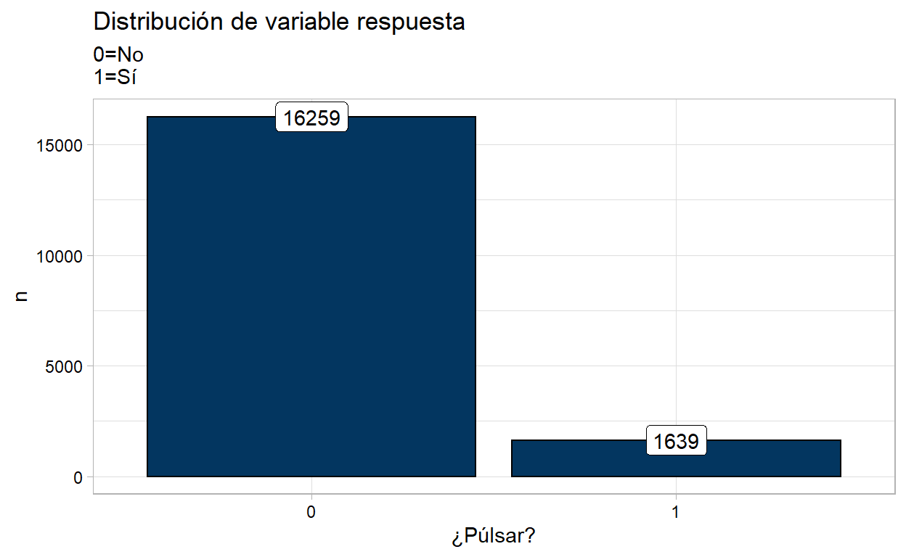
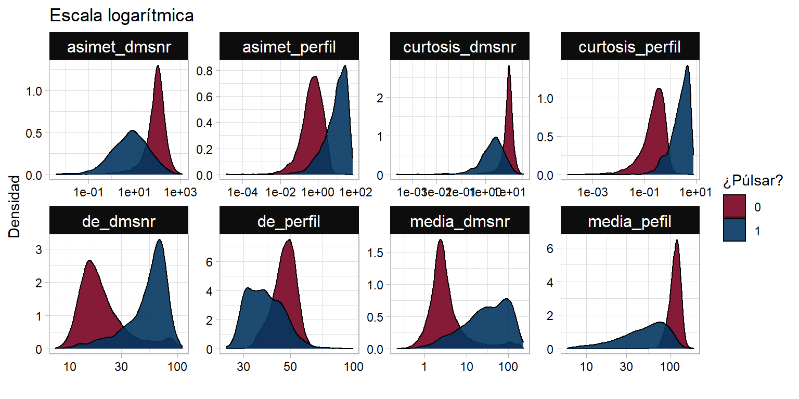
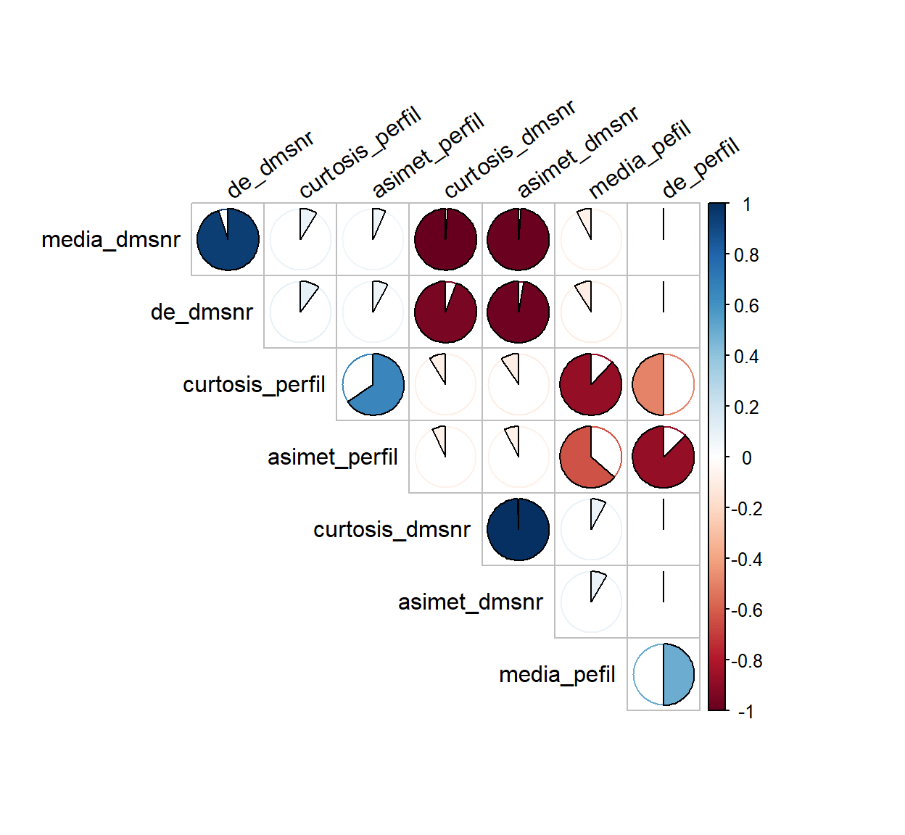
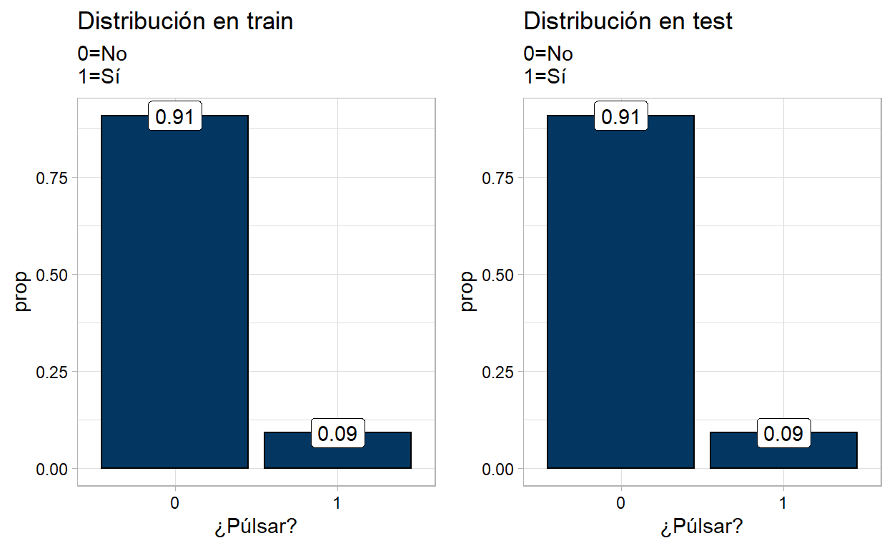
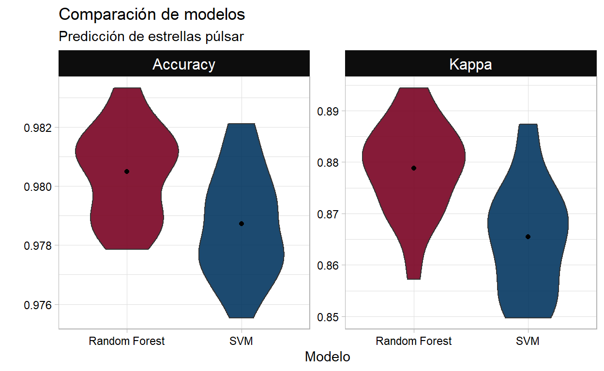

Algoritmos de machine learning con caret y R. Entrenamiento de modelos random forest y support vector machine en problemas de clasificación supervisada.
# Cargando biblioteca data.table
library(data.table)
# Nombres de variables
nombres <- c("media_pefil", "de_perfil", "curtosis_perfil", "asimet_perfil", "media_dmsnr",
"de_dmsnr", "curtosis_dmsnr", "asimet_dmsnr", "pulsar")
df_pulsar <- fread("data/pulsar_stars.csv", sep = ",", col.names = nombres,
colClasses = c(rep("numeric", 8), "factor"))
head(df_pulsar)
media_pefil de_perfil curtosis_perfil asimet_perfil media_dmsnr
1: 140.56250 55.68378 -0.23457141 -0.6996484 3.199833
2: 102.50781 58.88243 0.46531815 -0.5150879 1.677258
3: 103.01562 39.34165 0.32332837 1.0511644 3.121237
4: 136.75000 57.17845 -0.06841464 -0.6362384 3.642977
5: 88.72656 40.67223 0.60086608 1.1234917 1.178930
6: 93.57031 46.69811 0.53190485 0.4167211 1.636288
de_dmsnr curtosis_dmsnr asimet_dmsnr pulsar
1: 19.11043 7.975532 74.24222 0
2: 14.86015 10.576487 127.39358 0
3: 21.74467 7.735822 63.17191 0
4: 20.95928 6.896499 53.59366 0
5: 11.46872 14.269573 252.56731 0
6: 14.54507 10.621748 131.39400 0ggplot2 para gráficos:
# Cargando biblioteca tidyverse
library(tidyverse)
# Tema personalizado para gráficos
mi_temagg <- theme_light() +
theme(axis.text.x = element_text(color = "black"),
axis.text.y = element_text(color = "black"),
strip.background = element_rect(fill = "gray5"),
strip.text = element_text(color = "white", size = 12))
df_pulsar %>% group_by(pulsar) %>% count() %>%
ggplot(data = ., aes(x = pulsar, y = n)) +
geom_col(color = "black", fill = "#033660") +
geom_label(aes(label = n)) +
labs(x = "¿Púlsar?", title = "Distribución de variable respuesta",
subtitle = "0=No\n1=Sí") +
mi_temagg
df_pulsar %>%
gather(key = "variable", value = "valor", -pulsar) %>%
ggplot(data = ., aes(x = valor, fill = pulsar)) +
facet_wrap(~variable, scales = "free", ncol = 4) +
geom_density(alpha = 0.9) +
scale_x_log10() +
labs(x = "", y = "Densidad", title = "Escala logarítmica",
fill = "¿Púlsar?") +
scale_fill_manual(values = c("#790222", "#033660")) +
mi_temagg
# Cargando biblioteca corrplot
library(corrplot)
df_pulsar %>% mutate_if(is.numeric, scale) %>% select_if(is.numeric) %>%
cor(method = "spearman") %>%
corrplot(method = "pie", type = "upper", order = "hclust", diag = FALSE,
tl.srt = 35, tl.col = "black", tl.cex = 1)
df_train) y prueba (df_test), respectivamente.list = FALSE en la función createDataPartition, permite que el objeto sea devuelto en forma de vector.caret.
# Cargando biblioteca caret
library(caret)
# Semilla para reproducir resutlados
set.seed(073)
# Particiones
idx <- createDataPartition(y = df_pulsar$pulsar, times = 1, p = 0.7, list = FALSE)
df_train <- df_pulsar[idx, ]
df_test <- df_pulsar[-idx, ]
ggpubr::ggarrange(
df_train %>% group_by(pulsar) %>% count() %>% ungroup() %>% mutate(prop = n/sum(n)) %>%
ggplot(data = ., aes(x = pulsar, y = prop)) +
geom_col(color = "black", fill = "#033660") +
geom_label(aes(label = round(prop, digits = 2))) +
labs(x = "¿Púlsar?", title = "Distribución en train",
subtitle = "0=No\n1=Sí") +
mi_temagg,
df_test %>% group_by(pulsar) %>% count() %>% ungroup() %>% mutate(prop = n/sum(n)) %>%
ggplot(data = ., aes(x = pulsar, y = prop)) +
geom_col(color = "black", fill = "#033660") +
geom_label(aes(label = round(prop, digits = 2))) +
labs(x = "¿Púlsar?", title = "Distribución en test",
subtitle = "0=No\n1=Sí") +
mi_temagg,
ncol = 2
)
ranger.ranger que permite ajustar tres hiperparámetros:
mtry: número de predictores seleccionados.splitrule: criterio de división. En problemas de clasificación se suele utilizar Gini, aunque hay más disponibles. Ver documentación de ranger.min.node.size: número mínimo de observaciones en cada nodo. Por defecto para problemas de clasificación es 1.
# Algoritmo de random forest
modelo_rf <- train(pulsar ~ ., data = df_train, method = "ranger")
# Guardando modelo
saveRDS(object = modelo_rf, file = "models_fit/RandomForest.rds")
# Cargando modelo
mod_rf <- readRDS("models_fit/RandomForest.rds")
# Resultados del modelo
mod_rf
Random Forest
12530 samples
8 predictor
2 classes: '0', '1'
No pre-processing
Resampling: Bootstrapped (25 reps)
Summary of sample sizes: 12530, 12530, 12530, 12530, 12530, 12530, ...
Resampling results across tuning parameters:
mtry splitrule Accuracy Kappa
2 gini 0.9801226 0.8758954
2 extratrees 0.9794474 0.8705685
5 gini 0.9801169 0.8762727
5 extratrees 0.9803843 0.8777407
8 gini 0.9795793 0.8731006
8 extratrees 0.9804887 0.8788098
Tuning parameter 'min.node.size' was held constant at a value of 1
Accuracy was used to select the optimal model using the
largest value.
The final values used for the model were mtry = 8, splitrule
= extratrees and min.node.size = 1.
# Predicciones en nuevos datos
predict_rf <- predict(object = mod_rf, newdata = df_test)
# Matriz de confución
confusionMatrix(predict_rf, df_test$pulsar, positive = "1")
Confusion Matrix and Statistics
Reference
Prediction 0 1
0 4840 84
1 37 407
Accuracy : 0.9775
95% CI : (0.9731, 0.9813)
No Information Rate : 0.9085
P-Value [Acc > NIR] : < 2.2e-16
Kappa : 0.8583
Mcnemar's Test P-Value : 2.892e-05
Sensitivity : 0.82892
Specificity : 0.99241
Pos Pred Value : 0.91667
Neg Pred Value : 0.98294
Prevalence : 0.09147
Detection Rate : 0.07582
Detection Prevalence : 0.08271
Balanced Accuracy : 0.91067
'Positive' Class : 1
svmRadial que está contenido en la biblioteca kernlab.sigma y C (costo).kernlab.
# Algoritmo
modelo_svmR <- train(pulsar ~ ., data = df_train, method = "svmRadial")
# Guardando modelo
saveRDS(object = modelo_svmR, file = "models_fit/SVM_Radial.rds")
# Cargando modelo
mod_svmR <- readRDS("models_fit/SVM_Radial.rds")
# Resultados del modelo
mod_svmR
Support Vector Machines with Radial Basis Function Kernel
12530 samples
8 predictor
2 classes: '0', '1'
No pre-processing
Resampling: Bootstrapped (25 reps)
Summary of sample sizes: 12530, 12530, 12530, 12530, 12530, 12530, ...
Resampling results across tuning parameters:
C Accuracy Kappa
0.25 0.9785764 0.8629191
0.50 0.9785329 0.8635606
1.00 0.9787235 0.8654589
Tuning parameter 'sigma' was held constant at a value of 0.4893064
Accuracy was used to select the optimal model using the
largest value.
The final values used for the model were sigma = 0.4893064 and C = 1.
predict_svmR <- predict(object = mod_svmR, newdata = df_test)
confusionMatrix(predict_svmR, df_test$pulsar, positive = "1")
Confusion Matrix and Statistics
Reference
Prediction 0 1
0 4852 95
1 25 396
Accuracy : 0.9776
95% CI : (0.9733, 0.9814)
No Information Rate : 0.9085
P-Value [Acc > NIR] : < 2.2e-16
Kappa : 0.8563
Mcnemar's Test P-Value : 2.999e-10
Sensitivity : 0.80652
Specificity : 0.99487
Pos Pred Value : 0.94062
Neg Pred Value : 0.98080
Prevalence : 0.09147
Detection Rate : 0.07377
Detection Prevalence : 0.07843
Balanced Accuracy : 0.90070
'Positive' Class : 1
mod_svmR$resample %>%
select(-Resample) %>%
mutate(Modelo = "SVM") %>%
bind_rows(mod_rf$resample) %>%
select(-Resample) %>%
replace_na(list(Modelo = "Random Forest")) %>%
gather(key = "Medida", value = "Valor", -Modelo) %>%
ggplot(data = ., aes(x = Modelo, y = Valor, fill = Modelo)) +
facet_wrap(~Medida, scales = "free", ncol = 2) +
geom_violin(alpha = 0.9) +
stat_summary(fun = mean, geom = "point", pch = 19) +
labs(y = "", title = "Comparación de modelos",
subtitle = "Predicción de estrellas púlsar") +
scale_fill_manual(values = c("#790222", "#033660")) +
mi_temagg +
theme(legend.position = "none")